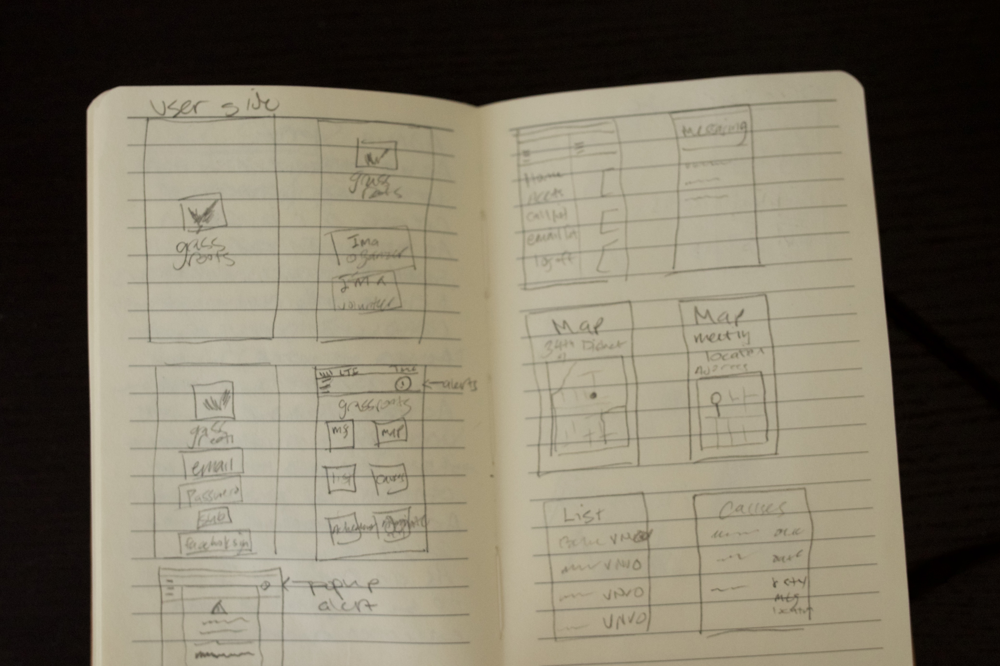
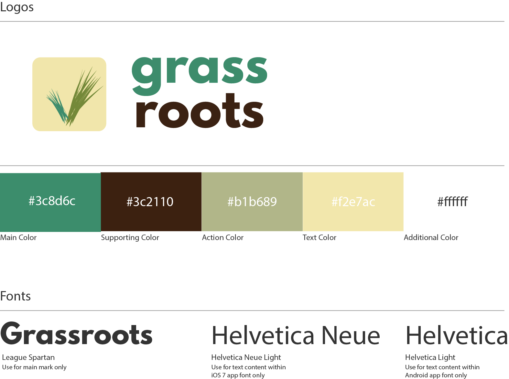

Grassroots
Mobile Design // iOS 8 // Prototyping // inVision // Illustrator // Photoshop
Volunteering in the local community is a fulfilling way to spend your time and get out there to help others. However, there are so many opportunities out there that sometimes it’s overwhelming to people who do not know where to start. This Bloc Apprenticeship project had me tasked with coming up with an idea for a mobile app to help people easily find volunteer work that sorted opportunities with their interests as well as combining multiple ways to help others. Also, creating ways to simply register for an event or donate to a cause you believe in from your mobile device.
Goals
1. Simplify the process of finding volunteering opportunities by sorting
2. Display causes that users want to donate or sign up for
3. Have achievements that reward the user
Research
I started looking at other mobile apps that had a philanthropic or volunteering background such as The Red Cross, VolunteerMatch, and UNICEF. My criticism of the apps is that they were not aesthetically pleasing because there was a lot of content to cover for each cause and sometimes they were not easy to navigate. However, the patterns from apps helped me create a good user flow when someone wants to create an account, search for local volunteer events, and donate to a cause.
User Flow Wireframing
I continued this process by creating a user story that would help me visualize which features the mobile app requires. I was able to decide what problems needed to be solved as well as develop the brand identity. I started out by sketching initial wireframes, then put different iterations into illustrator. However, I started to ideate too many features into the app that I needed to take a couple steps back and really focus on four distinct goals: Creating a flow for users to register and have a profile, search for volunteer opportunities with filters, easy donation flow, and create an incentive through the content that encouraged users to help others.

Branding and Prototyping
I created a logo and chose an earthy color palette that would inspire volunteerism. Then, I created high-fidelity screens using Photoshop and the Teehanlax iOS 8 templates to speed up my designs of certain functions such as search toolbars or maps. Once this process was complete, I put together a prototype by using inVision to see how the mobile app would work as if it was a live product.
